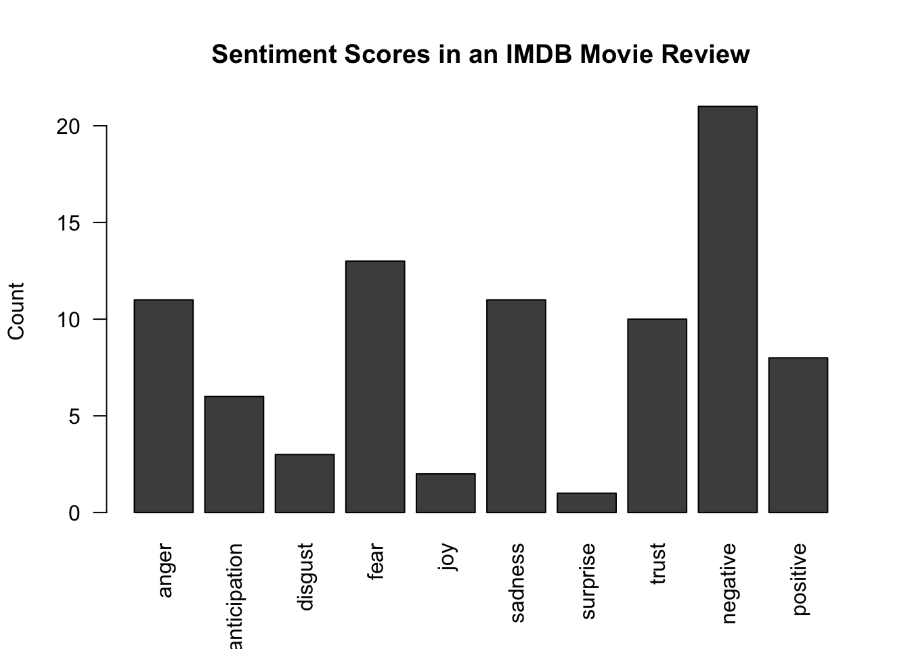

| Document_ID | Original_Text | Cleaned_Text |
|---|---|---|
| 1 | One of the other reviewers has mentio... | one reviewers mentioned watchin... |
| 2 | A wonderful little production. <br />... | wonderful little production filmi... |
| 3 | I thought this was a wonderful way to... | thought wonderful way spend time... |
Homework 6: IMDB Text Mining & Sentiment Analysis
1 Introduction
In this analysis, we performed text-mining techniques to movie reviews from the Internet Movie Database (IMDb) in order to quantify and visualize word trends and emotional tones across reviews. Text-mining combines data cleaning and language processing techniques, enabling researchers to systematically analyze unstructured text for meaningful patterns such as term frequency and emotional sentiments. This approach combines the ease of decreased manual effort with nuance in understanding narratives and perspectives.
2 Methods
2.1 Data Preprocessing
We began by importing the IMDb dataset csv into R and converting the review column into a corpus object using the tm package. The VectorSource function was called in order to treat every review as a separate document. The result was a corpus which, in this context, streamlines analysis by serving as a repository of the text documents. The corpus was then preprocessed to ensure uniformity and remove noise. Specifically, all entries were transformed to lowercase, numbers and punctuation were removed, and common English stopwords were excluded. In addition, a small set of self-defined stop and non-english words (“I”, “br”, “You,”, “The”, “A”, “It”) were removed after additional data exploration to further reduce noise.
2.2 Word Cloud Creation
After preprocessing we created a document term matrix (DTM) which represents the frequency of terms across all documents. In this matrix, each row corresponds with a document, each column corresponds to a unique term, and the cell values represent the number of times the term itself appears in a given document.
From this DTM, two visuals were created to represent the frequency of terms: a histogram and a word cloud. In a word cloud visualization, words are displayed in font sizes proportional to the their frequency, allowing words repeated more frequently to be more visible. We used the wordcloud function to create our visual which takes a specified threshold for which words to display based on frequency. In analysis, we chose to only display words that appeared more than 500 times to ensure variation but also to reduce noise.
2.3 Sentiment Analysis
Sentiment analysis was conducted to identify the emotional tone present within the IMDb review corpus. After converting the cleaned text into a document-term matrix, we used the NRC Emotion Lexicon, implemented through the syuzhet package, to map individual terms to ten emotion categories: anger, anticipation, disgust, fear, joy, sadness, surprise, trust, positive, and negative. A lexicon-based approach was chosen because it provides interpretable emotional classifications and is well suited for short and medium-length texts such as movie reviews.
To generate sentiment scores, we first extracted all terms appearing in a selected review along with their corresponding frequencies. Each word was then matched against the NRC lexicon to determine which emotions it contributes to. Because words may appear multiple times within the same review, emotional scores were weighted by term frequency to more accurately capture the intensity of expressed sentiment. After multiplying each emotion indicator by word frequency, we summed the results across all terms to produce an aggregate sentiment profile for the review. This process allowed us to quantify the emotional composition of the text and visualize it through a barplot illustrating the relative prominence of different emotions. Overall, the sentiment analysis approach provides a straightforward and interpretable way to characterize how reviewers express feelings toward the films they describe.
3 Results
3.1 Word Cloud
3.1.1 Preprocessing and Document-Term Matrix
After loading the IMDb review dataset, we applied a series of preprocessing steps to standardize the text data. These procedures included converting all characters to lowercase, removing numbers and punctuation, and eliminating English stopwords. Additional high-frequency but uninformative tokens such as “I,” “br,” “you,” “the,” “a,” and “it” were removed to ensure that the final corpus emphasized meaningful, content-bearing words. This process resulted in clean textual entries consisting primarily of descriptive terms and phrases relevant to the reviews.
A document-term matrix (DTM) was then constructed to quantify the frequency of each term across the corpus. The DTM contains 199 documents and 7,937 unique terms with an overall sparsity of 99%, which is typical of natural language data. Inspecting sample rows of the matrix reveals that commonly used film-related words—such as “film,” “movie,” “story,” and “good”—appear across many reviews, whereas most other terms occur only once or a few times. This reinforces the long-tailed nature of the dataset, where a small number of general descriptive words dominate, and thousands of low-frequency terms reflect specific opinions or contexts unique to individual reviews.
| Metric | Value |
|---|---|
| Number of Documents | 199 |
| Number of Terms | 7870 |
| Non-zero Entries | 20454 |
| Sparsity | 98.69% |
3.1.2 Term Frequency Distribution
The histogram of term frequencies further illustrates this pattern: the vast majority of words fall into the lowest frequency bin, with only a small number appearing more than 20 or 30 times. Such a distribution is expected in movie reviews, where each author introduces unique vocabulary while still relying on a shared set of evaluative and narrative descriptors. This distribution directly influences the terms that dominate the word cloud visualization.

3.1.3 Word Cloud
The word cloud highlights the terms that occur most frequently across the corpus. Larger words, such as “many,” “performance,” “plot,” “game,” “classic,” and “hotel,” indicate repeated appearance in reviews and reflect common themes related to storytelling, acting quality, and genre conventions. Additionally, expressive adjectives such as “difficult,” “appropriate,” “fabulous,” and “unexpectedly” suggest that reviewers frequently rely on emotional and descriptive language to articulate their reactions to the films.
Overall, the combination of the preprocessing results, term frequency distribution, and word cloud visualization offers a coherent picture of the lexical patterns present in the dataset. These findings demonstrate the diversity of vocabulary used by reviewers and highlight the central descriptive themes that recur throughout the IMDb corpus.

3.2 Sentiment Analysis
The sentiment analysis was conducted on the first review in the IMDB dataset using the NRC lexicon, which categorizes words into eight emotions (anger, anticipation, disgust, fear, joy, sadness, surprise, trust) and two sentiments (negative, positive). Each term in the review was matched against the NRC sentiment dictionary, and the sentiment scores were weighted by the frequency of each term’s appearance in the review.
The bar plot below displays the total sentiment scores across all ten categories. The analysis shows that negative sentiment dominates this review, with a count of approximately 21 compared to positive sentiment at around 8. Among the emotions, fear, anger, and sadness are most prevalent, while trust is the highest-scoring positive emotion.

However, visual inspection of the actual review reveals it is positive in nature. This highlights a key limitation of lexicon-based sentiment analysis: it does not account for context. The high scores for fear, anger, and sadness likely reflect the reviewer describing the film’s plot — discussing scary or tense scenes — rather than expressing dissatisfaction with the movie. This approach accounts for term frequency but cannot distinguish between describing negative content positively versus expressing genuine criticism of the film.
4 Discussion
The findings from this text mining and sentiment analysis of IMDb movie reviews reveal important insights into how viewers express their opinions about films, while also highlighting challenges in sentiment classification. The word cloud visualization demonstrates that reviewers consistently use vocabulary focused on the nature of film (“plot,” “story”, “performance”, etc.), and evaluative language (“classic,” “fabulous”). This consistency in terminology could prove valuable for those seeking to understand which aspects of movies resonate most strongly with viewers and generate discussion.
However, the sentiment analysis results underscore a limitation of lexicon-based approaches: the inability to distinguish between describing negative content and expressing negative sentiment about the film itself. As demonstrated with the first review, high scores for fear, anger, and sadness reflected plot descriptions of a thriller rather than criticism of the movie. Future analyses could address this limitation through several approaches: implementing more sophisticated natural language processing techniques that account for context and negation, comparing sentiment scores between positive and negative reviews to identify distinguishing patterns, or doing some analysis to separate discussion of film content from evaluative commentary. Additionally, examining how sentiment patterns differ across genres could reveal whether certain types of films typically produce misleading sentiment scores, thereby refining our understanding of when simple lexicon-based methods are sufficient versus when more complex contextual analysis is necessary.